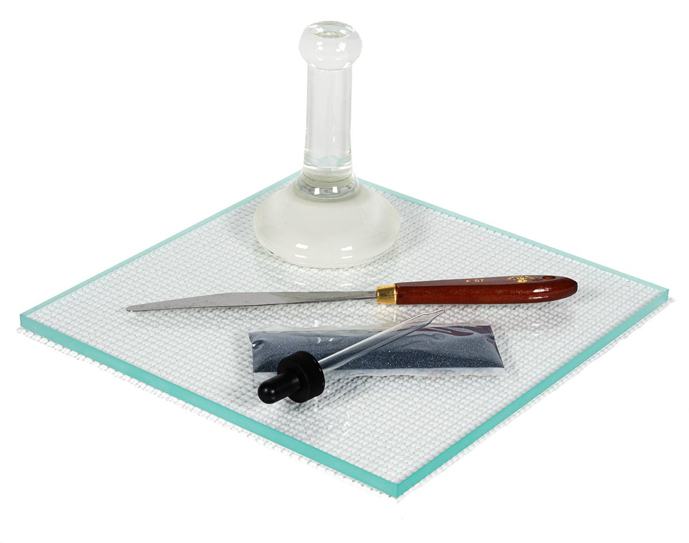
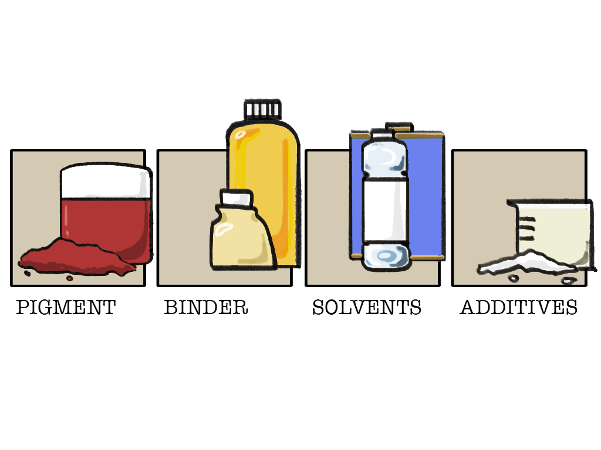
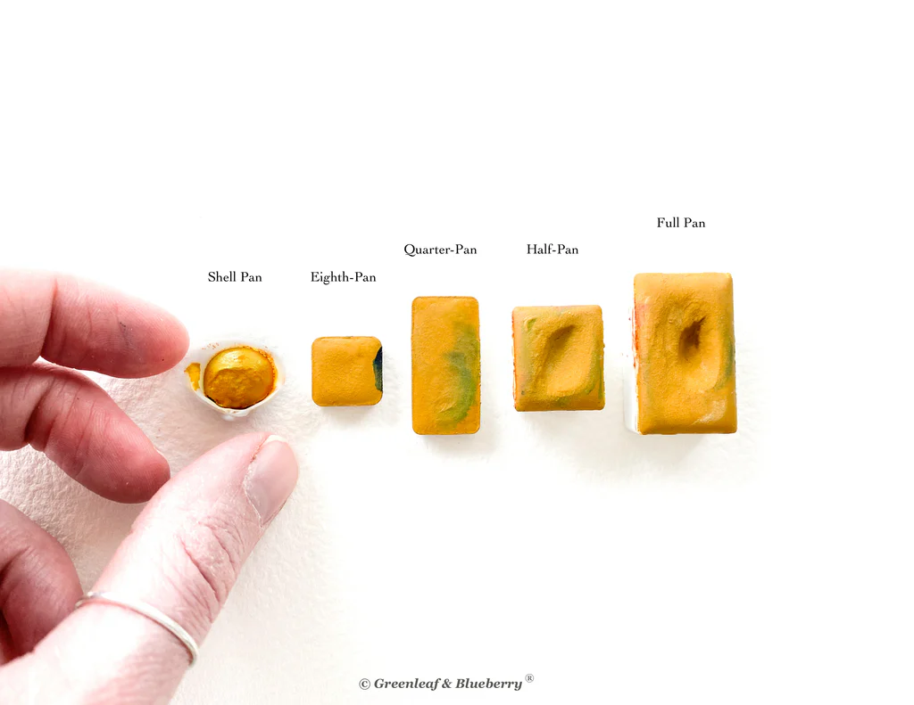

Recipes
Here is a collection of 3 paint recipes that you can make at home with fairly accessible/ natural materials
You may need:
- Grinding plate (smooth, flat glass or stone plate)
- Muller (glass or stone muller to grind the paste)
- A palette knife or spatula for mixing the paint
- Mortar and pestle (for grinding pigments if necessary)
- Scale or measuring spoon (for measuring the pigments, gum arabic, and other ingredients)
- Glass or plastic dropper (for adding water to the paint)
- Glass or plastic containers with lids for storing paint/ or paint tubes.
Note: Each natural pigment has different properties and behaves differently, so you will need to adjust pigment amount accordingly. For example, we find that Ultramarine Blue needs a little more pigment than 1:1, and Terre Verte needs less pigment.
OIL:
Step 1: Place a small amount of pigment in a heap at the center of the surface. Make a small crater in the center of the heap.
Step 2: Add oil or paint medium to the pigment slowly—a few drops at a time. The less oil added in the beginning, the easier it will be to break up the agglomerates of pigment particles.
Step 3: Fold the pigment into the oil with the spatula. Continue to blend the pigment into the oil, applying pressure to the mixture as you mix it. The correct amount of oil is added when the mixture has the consistency of a stiff paste and appears dry. Initially, it is better to grind a stiff paste than one that is soft and runny.
Step 4: Place the muller on top of the paste. Hold the muller firmly with the heel of your hand and thumb up. Move the muller in a circular motion outward from the center of the paste. Spread the paste in a thin layer as you grind. The more paste in contact with the surface of the plate and the flat bottom of the muller, the smoother the paste will be. The more you grind, the softer it becomes. Paste that is at first dry and stiff becomes wet and soft.
Step 5: Once the paste is spread out, collect it back to the center. Continue grinding with the muller.
Step 6: If the paste becomes runny, thicken it by adding a small amount of pigment to the mixture. Combine the pigment with a spatula, then grind with the muller until smooth.
Step 7: When the paint has the consistency desired, it is ready to use or store.
WATERCOLOR:
- Earth & Mineral Pigments
- Gum Arabic Powder
- Honey (if you want a vegan version, use glycerin)
Optional Ingredients:
- Clove or thyme essential oil (preservative)
- Sodium benzoate (stronger preservative)
- Oxgal (increases flow, not vegan)
1. Prepare Watercolor Medium:
- 6 Tbsp hot water
- 3 Tbsp gum Arabic powder
- 2 Tbsp honey
1. Pour gum Arabic powder into the hot water and mix until fully dissolved 2. Mix in honey 3. Optional- add 1-2 drops clove or thyme essential oil or 1/2 teaspoon of sodium benzoate as a preservative and mix thoroughly Notes: Watercolor medium must be stored in an airtight container in the refrigerator until used (will last up to 1 year).
This recipe makes enough medium for 20-25 full pans
2. Prepare Watercolor Paint
Mix 1 part watercolor medium with 1 part pigment (adjust as necessary). For example, if you're using 1 Tbsp. of the watercolor base, use 1 Tbsp. pigment. Scoop pigment onto glass palette and make a small indentation on top. Pour medium onto pigment (or use a glass dropper) and mix with a palette knife on a glass palette. If the texture feels a little gritty, add a drop or two of more medium and keep mixing.
3. Storing
Scoop and scrape the paint into your chosen container with the palette knife. Store in airtight jars or small aluminum tubes, or let dry into cakes or pans. If drying into cakes or pans, let dry thoroughly - ideally 3 days to a week - in a warm, dry place out of direct sunlight. For best results, fill pan 1/2 way, let dry 1 or 2 days, then fill to the top and let dry.
To fill 1 full pan, start with 1 teaspoon watercolor medium and 1 teaspoon pigment. Notes If you are storing the watercolor base for an extended period, refrigerate to extend shelf life (up to 1 year). These preservative options are natural and mild so they will not preserve the paints at hot or room temperatures for long periods of time like toxic, synthetic preservatives do.
GUOACHE PAINT:
Preparing Binding Agent:
Add gum arabic powder to water. While stirring, gently warm the solution not exceeding 140° F (60° C) until all the gum dissolves. Prepare the second solution by adding borax to water. While stirring, gently warm the solution not exceeding 140° F (60° C) until the borax dissolves. Add glycerin to the solution. Mix the two solutions together and store it in a sealed container.
Making Gouache paint;
Start by measuring out a pigment and one of the extender pigments, such as barite or chalk, using a scale or measuring spoon. The ratio of pigment to extender pigment will vary depending on the desired opacity of the paint, but a good starting point is 1 part pigment to 2 parts of extender pigment. If the pigments are not already finely ground, use a mortar and pestle to grind them to a fine powder. Mix the pigment and extender pigment together in a bowl using a palette knife or spatula. Mix until the two powders are blended. Place the pigment mixture on the grinding plate in a pile. Slowly add the gouache binding agent to the pile, a few drops at a time, and mix with the palette knife or spatula until the desired consistency is achieved. Gouache paint should be thicker than traditional watercolor paint but still pourable. Gather the paste into a pile and place the muller on the pile and begin grinding with back and forth or circular motions. It is not necessary to apply lots of pressure on the muller because the grinding is accomplished by rubbing the paste with the horizontal movement of the muller. Once the paint is ground to smoothness, transfer it to an airtight container such as a glass or plastic jar. Label the container with the color name and date. Allow the paint to sit overnight to wet the pigments with the binding agent thoroughly. After the paint has rested, it is ready to use.
6-12month shelf life after preparation